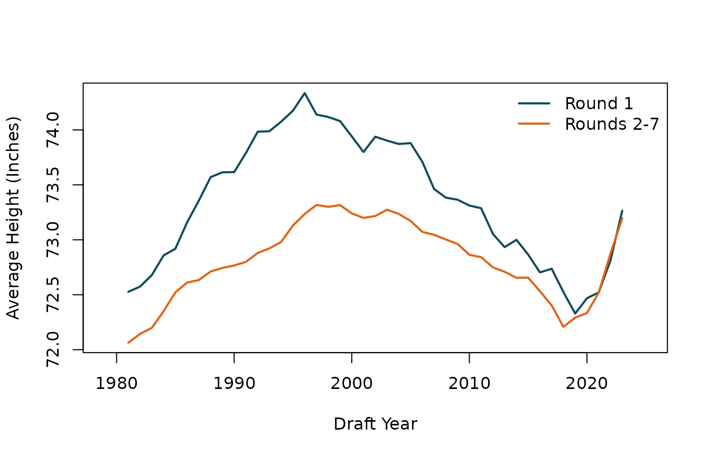
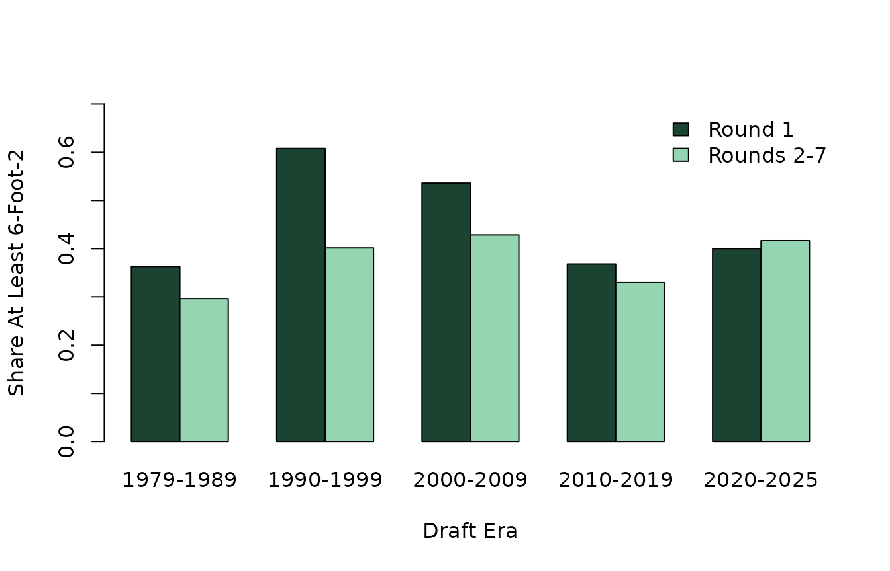

Did the NHL Draft's Size Obsession Peak in the 1990s?
Source:vignettes/draft-size-bias.Rmd
draft-size-bias.RmdOverview
NHL draft discourse has always had a body-type vocabulary. Prospects
are praised for “frame”, “length”, and “pro build” long before anyone
knows whether those gifts will actually translate into NHL impact. What
changes over time is the intensity of that preference.
This example asks a historical version of the size question:
when was the NHL draft most tilted toward bigger
skaters? Instead of looking at one ranking board, we use
nhlscraper::draft_picks() to study actual selections across
almost half a century of drafts. The goal is not to claim that teams
ever drafted size instead of skill. The goal is to see whether
certain eras leaned harder on size as a tiebreaker, especially near the
top of the board.
Build Draft Sample
We keep skaters drafted from 1979 onward, drop goalies, and require non-missing height and weight. To keep the comparisons intuitive, we split picks into first-round selections and everyone taken from Rounds 2 through 7.
# Pull draft picks and keep skaters with measured size.
draft_tbl <- nhlscraper::draft_picks()
draft_tbl <- draft_tbl[
draft_tbl[['draftYear']] >= 1979 &
draft_tbl[['positionCode']] != 'G' &
!is.na(draft_tbl[['height']]) &
!is.na(draft_tbl[['weight']]),
]
# Create era, round, and position buckets.
draft_tbl[['roundBucket']] <- ifelse(
draft_tbl[['roundNumber']] == 1,
'Round 1',
'Rounds 2-7'
)
draft_tbl[['era']] <- cut(
draft_tbl[['draftYear']],
breaks = c(1978, 1989, 1999, 2009, 2019, Inf),
labels = c(
'1979-1989',
'1990-1999',
'2000-2009',
'2010-2019',
'2020-2025'
)
)
draft_tbl[['positionBucket']] <- ifelse(
draft_tbl[['positionCode']] == 'D',
'Defense',
'Forward'
)
draft_tbl[['tallSkater']] <- draft_tbl[['height']] >= 74
nrow(draft_tbl)
#> [1] 9998That gives us 9998 drafted skaters with usable height and weight measurements. This is a big enough pool to tell an era story rather than a class-of-one story.
Start With Era Averages
The first pass is simple: average height and weight by era and round bucket.
# Summarize size by era and round bucket.
era_summary <- aggregate(
cbind(height, weight) ~ era + roundBucket,
data = draft_tbl,
FUN = mean
)
make_table(
era_summary,
caption = 'Average drafted skater size by era and draft bucket.'
)| era | roundBucket | height | weight |
|---|---|---|---|
| 1979-1989 | Round 1 | 72.934 | 200.659 |
| 1990-1999 | Round 1 | 74.060 | 209.534 |
| 2000-2009 | Round 1 | 73.694 | 203.086 |
| 2010-2019 | Round 1 | 72.889 | 189.757 |
| 2020-2025 | Round 1 | 73.032 | 188.292 |
| 1979-1989 | Rounds 2-7 | 72.381 | 192.216 |
| 1990-1999 | Rounds 2-7 | 73.094 | 195.145 |
| 2000-2009 | Rounds 2-7 | 73.148 | 195.120 |
| 2010-2019 | Rounds 2-7 | 72.575 | 186.634 |
| 2020-2025 | Rounds 2-7 | 72.981 | 185.607 |
The shape is more nuanced than the usual “the game keeps getting bigger” story. Average first-round size surged in the 1990s, stayed elevated in the 2000s, then fell back in the 2010s. The top of the board in the modern era is still not exactly small, but it does not look like the peak size era. Just as important, first-round skaters are consistently larger than later-round skaters. The draft’s size preference shows up not only across eras, but also in where teams are willing to spend their most expensive picks.
Plot the First-Round Size Arc
A year-by-year line makes the rise-and-fall pattern easier to see. To reduce noise from small annual swings, we use a five-draft rolling average.
# Compute annual mean height by round bucket.
round1_annual <- aggregate(
height ~ draftYear,
data = draft_tbl[draft_tbl[['roundBucket']] == 'Round 1', ],
FUN = mean
)
later_annual <- aggregate(
height ~ draftYear,
data = draft_tbl[draft_tbl[['roundBucket']] == 'Rounds 2-7', ],
FUN = mean
)
# Smooth annual means with five-draft rolling averages.
round1_annual[['rollHeight']] <- as.numeric(stats::filter(
round1_annual[['height']],
rep(1 / 5, 5),
sides = 2
))
later_annual[['rollHeight']] <- as.numeric(stats::filter(
later_annual[['height']],
rep(1 / 5, 5),
sides = 2
))
graphics::plot(
round1_annual[['draftYear']],
round1_annual[['rollHeight']],
type = 'l',
lwd = 2,
col = '#0f4c5c',
ylim = range(
c(round1_annual[['rollHeight']], later_annual[['rollHeight']]),
na.rm = TRUE
),
xlab = 'Draft Year',
ylab = 'Average Height (Inches)'
)
graphics::lines(
later_annual[['draftYear']],
later_annual[['rollHeight']],
lwd = 2,
col = '#e36414'
)
graphics::legend(
'topright',
legend = c('Round 1', 'Rounds 2-7'),
col = c('#0f4c5c', '#e36414'),
lwd = 2,
bty = 'n'
)
Five-draft rolling average height for first-round skaters and later-round skaters.
The picture is striking. The first round visibly bulks up in the 1990s, stays large through the 2000s, and then cools off. Later rounds move in the same direction, but less dramatically. That is exactly what you would expect if size became a stronger premium near the very top of the draft board during that period.
Ask How Often Teams Chased Tall Skaters
Averages can hide roster mix, so it helps to translate height into a more intuitive marker. Here we ask what share of drafted skaters were at least 6-foot-2.
# Summarize share of taller skaters by era.
tall_share <- aggregate(
tallSkater ~ era + roundBucket,
data = draft_tbl,
FUN = mean
)
tall_counts <- aggregate(
height ~ era + roundBucket,
data = draft_tbl,
FUN = length
)
names(tall_counts)[names(tall_counts) == 'height'] <- 'n'
tall_share <- merge(tall_share, tall_counts, by = c('era', 'roundBucket'))
make_table(
tall_share,
caption = 'Share of drafted skaters measuring at least 6-foot-2.'
)| era | roundBucket | tallSkater | n |
|---|---|---|---|
| 1979-1989 | Round 1 | 0.363 | 226 |
| 1979-1989 | Rounds 2-7 | 0.296 | 2070 |
| 1990-1999 | Round 1 | 0.608 | 232 |
| 1990-1999 | Rounds 2-7 | 0.402 | 2107 |
| 2000-2009 | Round 1 | 0.536 | 278 |
| 2000-2009 | Rounds 2-7 | 0.429 | 1978 |
| 2010-2019 | Round 1 | 0.368 | 296 |
| 2010-2019 | Rounds 2-7 | 0.331 | 1609 |
| 2020-2025 | Round 1 | 0.400 | 185 |
| 2020-2025 | Rounds 2-7 | 0.417 | 1017 |
The first round is where the story becomes loudest. In the 1990s, about 60.8 percent of first-round skaters in the sample were at least 6-foot-2. In the 2010s that share dropped to about 36.8 percent. That is a major shift in what the “ideal” first-round skater looked like.
# Plot tall-skater shares by era.
tall_matrix <- rbind(
tall_share[['tallSkater']][tall_share[['roundBucket']] == 'Round 1'],
tall_share[['tallSkater']][tall_share[['roundBucket']] == 'Rounds 2-7']
)
graphics::barplot(
tall_matrix,
beside = TRUE,
col = c('#1b4332', '#95d5b2'),
ylim = c(0, 0.7),
names.arg = levels(draft_tbl[['era']]),
ylab = 'Share At Least 6-Foot-2',
xlab = 'Draft Era'
)
graphics::legend(
'topright',
legend = c('Round 1', 'Rounds 2-7'),
fill = c('#1b4332', '#95d5b2'),
bty = 'n'
)
Share of drafted skaters at least 6-foot-2 by era and round bucket.
Separate Position From Era
Part of any draft-size story is just that defensemen tend to run bigger than forwards. So it helps to break the sample out by position family.
# Summarize size by era and position family.
position_summary <- aggregate(
cbind(height, weight) ~ era + positionBucket,
data = draft_tbl,
FUN = mean
)
make_table(
position_summary,
caption = 'Average drafted skater size by era and position family.'
)| era | positionBucket | height | weight |
|---|---|---|---|
| 1979-1989 | Defense | 72.981 | 197.046 |
| 1990-1999 | Defense | 73.897 | 200.884 |
| 2000-2009 | Defense | 73.888 | 200.536 |
| 2010-2019 | Defense | 73.255 | 190.180 |
| 2020-2025 | Defense | 73.840 | 190.435 |
| 1979-1989 | Forward | 72.117 | 190.719 |
| 1990-1999 | Forward | 72.781 | 194.079 |
| 2000-2009 | Forward | 72.832 | 193.575 |
| 2010-2019 | Forward | 72.246 | 185.289 |
| 2020-2025 | Forward | 72.516 | 183.561 |
Defensemen are consistently taller and heavier than forwards, which is exactly what most observers would expect. But the 1990s surge does not disappear once position is split out. The size bulge is still visible, especially for first-round picks, so this is not just a story about drafting more defensemen.
Estimate First-Round Premium
As a simple check, we can fit a linear model with height as the response and draft year, first-round status, and defense status as predictors.
# Fit simple draft-height model.
draft_fit <- stats::lm(
height ~ draftYear + I(roundNumber == 1) + I(positionCode == 'D'),
data = draft_tbl
)
draft_fit_tbl <- as.data.frame(summary(draft_fit)$coefficients)
draft_fit_tbl[['term']] <- rownames(draft_fit_tbl)
rownames(draft_fit_tbl) <- NULL
draft_fit_tbl[['term']] <- c(
'Intercept',
'Draft year',
'First-round indicator',
'Defense indicator'
)
draft_fit_tbl <- draft_fit_tbl[, c(
'term',
'Estimate',
'Std. Error',
't value',
'Pr(>|t|)'
)]
make_table(
draft_fit_tbl,
caption = 'Linear model of drafted skater height.',
digits = 4
)| term | Estimate | Std. Error | t value | Pr(>|t|) |
|---|---|---|---|---|
| Intercept | 58.4427 | 3.0281 | 19.3002 | 0 |
| Draft year | 0.0070 | 0.0015 | 4.6221 | 0 |
| First-round indicator | 0.5170 | 0.0610 | 8.4729 | 0 |
| Defense indicator | 1.0542 | 0.0413 | 25.5233 | 0 |
This model says the first-round premium is still real even after accounting for time and position. First-round skaters come in roughly 0.52 inches taller on average, while defensemen add about 1.05 inches on top of that.
The draft-year slope itself is small because the historical pattern is not a straight line. That is the core takeaway of the whole article: draft size preference looks less like a steady march and more like a boom that peaked in the 1990s and early 2000s.
What We Learned
The draft has never been indifferent to size, especially in the first
round. Bigger skaters have consistently been favored near the top of the
board, and defensemen have carried their own structural size premium the
whole way through. But the strongest form of that bias does not appear
to be a modern invention. In this sample, the most size-forward era is
the 1990s, with the 2000s not far behind. That makes
nhlscraper::draft_picks() a useful reminder that draft
archetypes move in cycles: the league does not just change, it
overcorrects and then changes back.